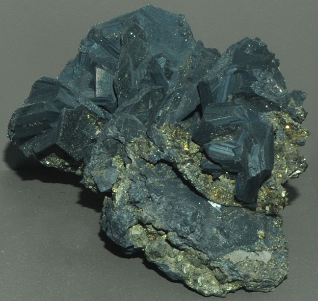

|

| (Ag,Cu)16Sb2S11
This sample of polybasite is displayed in the Smithsonian Museum of Natural History. Polybasite is a sulfide mineral of silver, copper and antimony. It has the composition (Ag,Cu)16Sb2S11. The sample at left is about 15 cm across and is from Las Chispas mine, Arizpe, Sonora, Mexico.
|